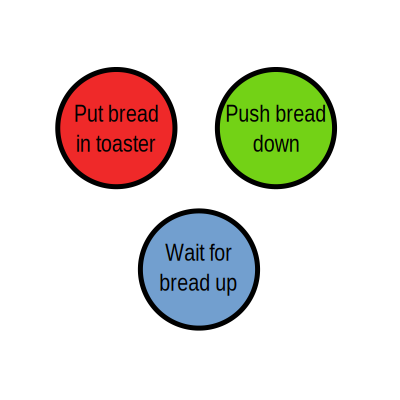

Mission (Im)possible: Making round toast
Navigate using ← / →
Making toast
The text version
Put bread in toaster
Push down on bread
Wait until toaster pushes bread up
Making toast
The no-text, SVG version
Making toast
The SVG as <img> version

Making toast
The Inkscape-generated, manually-enhanced, inlined SVG
Making toast
The Inkscape-generated, magically-enhanced, automatically-inlined SVG